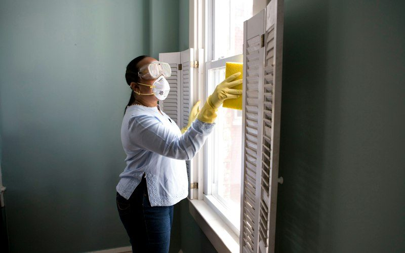
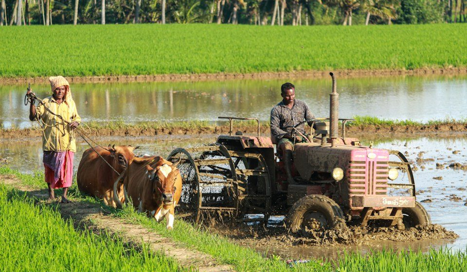

Daily services
Ask for help near you.
Ask for a serviceJobs
See work near you.
See jobs
Equipment
Rent machines near you.
Rent equipmentFarm hiring
See farm work near you.
Farm jobsDaily services
Choose the service you need. KaamDo asks a suitable worker. A worker is not chosen until one accepts.